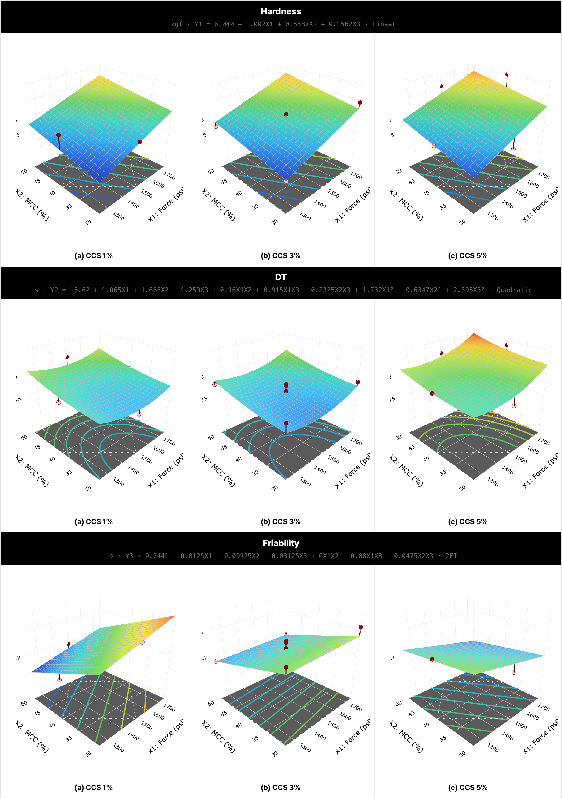
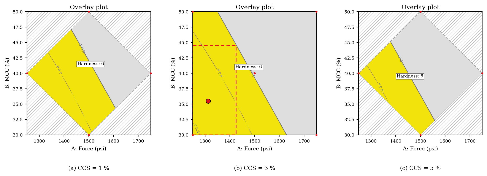
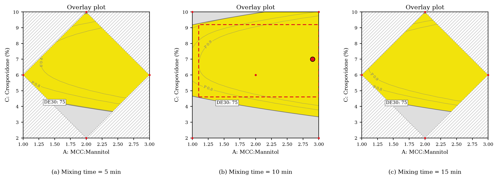

| 문제 | LLM은 처방 후보를 폭넓게 제안하지만 배합 금기·공정 한계·규제 상한 판단에서 근거 없는 결론을 낼 수 있다. |
| 접근 | 후보 생성은 LLM, 판정은 출처가 명시된 규칙표와 결정론 엔진, 수용 결정은 연구자 — 역할을 구조로 분리한다. |
| Stage I | 분자 해석(구조 패턴 82종) → 페이즈 게이트·전략 계획 → 병렬 후보 설계 → 입력 계약과 규칙표 29개(판정 18) → 동적 심사관 7명. 반려 시 전이표 16행에 따라 되돌린다. |
| Stage II | 근거 결손 게이트를 통과한 후보를 QTPP → CQA → 위험평가 → 실험 설계 → 회귀 검증 게이트 → 반응 곡면 → ANOVA → Overlay plot Design Space → 확인계획의 15단계로 진행하며, 단계마다 연구자가 승인한다. |
| 재현 | CBD 논문 위험 행렬 84/84칸 · 회귀·ANOVA(Table 10·11) 재현 · 로르녹시캄 15 run 네 반응 검증 게이트 통과 · 최적 처방 비 2.9 · 10분 · 7 % |
| 어블레이션 | 같은 LLM, 요청 7건(금기 고정 2) · 실행 49회 · 처방 104건 — 금기 처방 제시 순수 LLM 5/20, 검증 계층 제거 12/42, 전체 시스템 0/30 · 금기 요청 후보 반려 12/12 · 불가능 요청의 올바른 종결 1/6 · 0/4 · 4/4 · 과잉 거부 0 |
| 운영 | 라이브 시스템 zihwan.com/formula1(대회 API gpt-5.6-sol · 무료 Groq). 단위·통합 테스트 252개와 브라우저 테스트 8종으로 고정. |
제형 개발은 주성분에 첨가제를 배합해 복용 가능한 제품을 만드는 단계이다. 화학적 비상용성(예: 2차 아민과 유당의 Maillard 반응), 공정 실패(유동성 부족으로 인한 직접타정 불가), 규제 상한 초과(소아용 첨가제 한도)가 이 단계에서 결정되며, 처방이 정해진 뒤에는 위험평가로 중요 변수를 좁히고 실험계획법으로 그 영향을 정량화해야 한다[1].
LLM은 넓은 조합 공간을 탐색하고 상충하는 목표 사이의 절충을 서술하는 데 강하지만, 수치 판단에서 근거 없는 값을 확신 있게 생성할 수 있다. 제약 분야에서 이런 오류는 제품 폐기와 허가 반려로 이어진다. Formula 1은 LLM에 판정 권한을 주지 않고, 판정을 출처가 명시된 규칙표와 결정론 엔진에 맡긴다.
기여는 다섯 가지이다. (1) 규칙마다 근거 검증 상태에 따라 반려 권한이 정해지는 데이터 기반 검증 계층. (2) 값이 없어도 설계를 멈추지 않고 판정이 갈리는 지점에서만 실측을 요청하는 비차단 lab-in-the-loop와, 반려 사유별 복귀 지점을 정의한 되돌림 전이표. (3) 선택된 후보를 ICH Q8 절차의 15단계 승인 체계로 진행하여 위험 행렬, 모형 선택·검증 게이트, ANOVA, Overlay plot Design Space를 결정론적으로 계산하는 개발 단계. (4) 발화를 실행 가능한 입력으로 바꾸되 수치와 구조식의 생성을 코드로 차단한 입력 에이전트. (5) 같은 LLM으로 순수 LLM·검증 계층 제거 조건과 비교하여 검증 계층의 효과를 정량화한 어블레이션.
Quality by Design. ICH Q8(R2)[1]는 품질 목표(QTPP)에서 중요 품질 특성(CQA)을 도출하고, 위험평가(ICH Q9[2])로 중요 변수를 좁혀 실험계획법으로 설계공간을 정의한다. 설계공간의 신뢰성은 평균 반응면이 아니라 미래 배치가 규격을 만족할 확률로 평가해야 한다는 관점이 베이즈·예측분포 기반 접근으로 제시되어 왔다[4,5].
생물약제학 분류. BCS는 용해도와 투과도로 약물을 분류하고[3], DCS는 용해 속도 제한(IIa)과 용해도 제한(IIb)을 구분해 제형 전략(미분화 대 가용화)을 가른다[6]. 용해도 예측에는 ESOL[7]과 일반용해도식(GSE)[8] 같은 경험식이 쓰인다.
LLM 과학 에이전트. FutureHouse의 Robin은 가설 생성·실험 제안·결과 해석을 자동화해 후보 약물을 발굴하였고 지시문 원문을 공개하였다[9]. 본 시스템은 그 지시문 패턴(서로 구별되는 가설, 필요 없으면 제안하지 않음, 근거 우선 평가)을 차용하되, 시험 제안을 실제 확인시험 목록(66행) 안으로 제한하였다. 오케스트레이션에는 LangGraph[10]를 사용한다.
판정과 계산 권한은 결정론 계층에만 있고, LLM은 제안과 서술만 맡으며, 연구자는 개발 후보·위험 등급·실험 요인·회귀 모형을 단계마다 확정한다(표 1).
| 판단 유형 | 예 | 담당 |
|---|---|---|
| 정량 판단 | 첨가제 상한, 위험 행렬, 회귀계수, ANOVA | 규칙 기반 검사기, 통계 코드 |
| 맥락 판단 | 소아 복용 적합성, QTPP·위험평가 근거 초안 | 심사·초안 LLM(반려·승인 권한 없음) |
| 입력 변환 | “용량은 50 mg”, “1위 후보로 개발 착수” | 입력 에이전트(수치·구조식 생성 금지) |
| 수용 결정 | 개발 후보 선택, 위험 등급 승인, 실험 요인 결정, 회귀 모형 승인 | 연구자 |
LLM 호출은 단일 인터페이스(구조화 출력·스트리밍)로 추상화되어 제공자를 바꿀 수 있다. 운영 환경의 기본 모델은 무료 Groq(gpt-oss-120b)이고, 인증된 세션은 대회 제공 API(gpt-5.6-sol)를 쓸 수 있다(권한은 서버가 재검사). 대회 API가 한도 소진(403)이나 오류로 실패하면 같은 호출을 Groq로 넘기고, 분·일 단위 토큰 한도는 클라이언트가 관리해 호출을 대기시킨다. 끝내 응답이 없으면 결과를 지어내지 않고 “응답 없음”으로 표시한다.
입력 에이전트는 대화를 실행 가능한 입력으로 바꾼다. 맥락은 브라우저가 보낸 상태가 아니라 서버가 실행 기록에서 만든 스냅숏(설계 상태, 권고 후보, 병합된 실험 요청, 되돌림 정보, 열린 근거 결손)이다. LLM의 구조화 출력으로 의도(설계 실행, 측정값 제출, 개발 착수, 설명, 되묻기)와 초안 값을 받아 제안 카드로 만들고, 카드는 연구자가 실행해야 반영되며 수동 조작과 같은 함수 경로를 탄다.
가드레일은 프롬프트가 아니라 코드로 강제한다. (i) 제안의 모든 수치는 최근 사용자 발화의 수치여야 하며, 아니면 제거하고 알린다. (ii) SMILES는 사용자 입력, 내장 구조 사전, PubChem[12] 조회에서만 얻고 카드에 CID와 링크를 붙인다. (iii) 측정 키는 허용 목록과 측정 카탈로그로, 개발 착수는 현재 설계의 통과 후보로 제한한다. (iv) 구조식과 1회 용량이 없으면 카드를 미완성으로 두고 되묻는다(용량 없이는 용량/용해도 부피와 DCS가 성립하지 않는다). (v) 개발코드(예: VX-770)로 부른 물질은 코드를 이름으로 고정하고 실명과 라벨 제품명을 응답 전체에서 가린다. LLM이 되묻기만 했으나 발화의 행동이 분명하면(예: “Tm 317도” → 측정값 제출) 규칙 해석기가 보완하고, 설계가 끝나면 LLM 없이 맥락만으로 다음 행동을 먼저 제시한다.
RDKit으로 구조 품질(파싱, 염, 전하, 입체), 기술자 35종, 구조 패턴 82종을 계산한다. 패턴마다 등급(구조 사실·조건부 경고·높은 경고),
위험 조건, 확인 시험이 있고, 세분화된 아민 분류는 규칙표의 결합 키(primary_amine/secondary_amine)로 이어진다. 염 형태 구조는 가장 큰
유기 조각을 parent로 확정해 모든 물성을 parent 기준으로 계산하고, 염/유리염기 분자량비는 함량 환산에 따로 쓴다(베실산 암로디핀: 염 MW 567.1, parent 408.9).
값은 계산값(A), 경험식 예측값(B), 실측값(C)으로 구분되며, 예측값은 *_est에만 저장되어 실측을 덮지 않고 BCS 등급은 실측으로만 확정된다.
파생값 23종(D0, 흡수 한계, Tg 여유, ΔpKa 등)은 CSV 식으로 정의하고 고정점 반복으로 계산해, 결과가 코드의 기술 순서에 좌우되지 않는다.
게이트는 3A(BCS/DCS) → 3B(고체상) → 4(가용화 필요 여부) → 4B(ASD 공정) 순으로 평가되며, 이 순서가 게이트 간 의존을 반영한다. 게이트는 반려하지 않고
전략 탐색 범위만 정한다. 조건식이 값의 부재를 조건으로 쓰는 경우(tm_c is None)를 위해 모든 참조 변수를 None으로 먼저 채워, “모름”이
“미발동”으로 읽히지 않게 한다. 계획은 발동 신호로 전략 8종(표 2)을 채점해 상위 3개를 고르고, 정렬된 전략 코드로 계획 서명을 만든다. 판정이
갈리지 않으면(예: 투과도 미상으로 IIa/IIb 구분 불가) 양쪽 전략을, 유동성 자료가 없으면 세 공정 경로를 모두 잠정 허용한다. 되돌림 제약 뒤 남는 전략이 없으면
목표(QTPP) 재검토로 종료한다.
| 코드 | 가족 | 전략 | 공정 단계 | 요구 측정(트리거) |
|---|---|---|---|---|
| CONV_DC | CONVENTIONAL | 직접타정 | blending;direct_compression | |
| CONV_DG | CONVENTIONAL | 건식과립 | blending;roller_compaction;milling;compression | |
| CONV_WG | CONVENTIONAL | 습식과립 | blending;wet_granulation;drying;milling;compression | DRQ_MOISTURE |
| MICRO | PARTICLE_SIZE | 미분화 API + IR 정제 | micronization;blending;direct_compression | DRQ_PSD |
| ASD_SDD | ENABLING | 분무건조 무정형 고체분산체 | spray_drying;secondary_drying;roller_compaction;milling;compression | DRQ_GFA;DRQ_ASD_FEAS |
| ASD_HME | ENABLING | 용융압출 무정형 고체분산체 | hot_melt_extrusion;milling;blending;compression | DRQ_GFA;DRQ_ASD_FEAS |
| LBF_SEDDS | ENABLING | 자가유화 지질제형 캡슐 | lipid_dissolution;liquid_fill;capsule_sealing | DRQ_SEDDS_FEAS |
| CD | ENABLING | 사이클로덱스트린 포접 | complexation;drying;blending;direct_compression | DRQ_CD_FEAS |
strategy_families.csv). 요구 측정 열은 측정 기반 되돌림이 적용되는 전략도 정한다.규칙은 코드가 아니라 CSV 행이다. 단일 manifest가 각 CSV를 여덟 개의 범용 검사 함수(쌍 금기, 부분집합 금지, 임계값, 범위, 필수 성분, 조건부 금지, 구간
조회, 결정 트리) 중 하나에 연결하고, 검사는 우선순위 단계별로 실행되어 앞 단계의 파생값(유동성 등급 → 공정 경로 → BCS 등급)이 뒤 단계의 발동 조건이 된다.
행마다 verification_status가 있어 검증된 행만 반려할 수 있고, 미검증 행은 심사관 표시로 강등되며, 출처 없는 행은 로드되지 않는다. 성분명은 두
부형제 마스터(영문·국문·이명)를 사전으로 정규화해 대조하고 등급 표기 구절(예: “direct-compression grade”, “PH 102”)은 구절 단위로 제거한다. 구조를 해석하지
못한 실행은 통과가 아니라 이관(STRUCT000)으로 끝난다. 시스템이 읽는 규칙표의 종류는 표 3에 정리하였다.
| 구분 | CSV (행 수) | 검사 방식 · 내용 |
|---|---|---|
| 규칙 게이트 · 참조 마스터 (0–4) | excipient_master.csv (100행) rdkit_descriptor_definitions.csv (10행) structural_flags_smarts.csv (5행) physchem_estimation_rules.csv (5행) | 참조 참조 4 |
| 규칙 게이트 · API 물성 (5–9) | api_physchem_thresholds.csv (62행) | 임계값 판정 1 |
| 규칙 게이트 · 흐름 → 경로 (10–19) | powder_flow_scale.csv (21행) route_decision_tree.csv (10행) | 구간 조회 · 결정 트리 판정 2 |
| 규칙 게이트 · 배합금기 · 소아 (20–29) | incompatibility_1to1.csv (15행) pediatric_safety_rules.csv (46행) coloring_flavoring_pediatric_rules.csv (10행) | 쌍 금기 · 임계값 · 조합 금지 판정 4 |
| 규칙 게이트 · 다성분 (30–39) | incompatibility_multicomponent.csv (6행) | 조합 금지 판정 1 |
| 규칙 게이트 · 공정 세부 (40–49) | direct_compression_rules.csv (10행) dry_granulation_rules.csv (6행) wet_granulation_aqueous_rules.csv (6행) wet_granulation_nonaqueous_rules.csv (5행) capsule_filling_rules.csv (6행) excipient_functional_ratio_rules.csv (12행) | 임계값 · 범위 판정 6 |
| 규칙 게이트 · 코팅 · 용매 (50–59) | coating_rules.csv (6행) residual_solvent_ich_q3c_rules.csv (8행) | LLM 판단 · 임계값 판정 1 · LLM 1 |
| 규칙 게이트 · BCS · 용출 (60–69) | bcs_classification_criteria.csv (10행) bcs_strategy_rules.csv (4행) dissolution_biowaiver_ichm9.csv (3행) dissolution_acceptance_usp711.csv (6행) dissolution_apparatus_usp711.csv (4행) | 구간 조회 · 필수 성분 · LLM 판단 · 참조 판정 2 · LLM 1 · 참조 2 |
| 규칙 게이트 · 포장 · 안정성 (70–79) | packaging_compatibility_rules.csv (5행) analytical_method_rules.csv (13행) stability_significant_change_ichq1a.csv (7행) stability_storage_conditions_ichq1a.csv (11행) | 조건부 금지 · 참조 판정 1 · 참조 3 |
| 페이즈 게이트 · 계획 | gate_3a_biopharm_class.csv (14행) gate_3b_solid_form.csv (7행) gate_4_enabling_strategy.csv (11행) gate_4b_asd_process.csv (3행) derived_quantities.csv (23행) strategy_families.csv (8행) literature_bcs.csv (1행) | BCS/DCS · 고체상 · 가용화 · ASD 공정 게이트, 파생값 식, 전략 가족과 채점 |
| 데이터 요청 | data_request_triggers.csv (16행) measurement_catalog.csv (20행) measurement_output_fields.csv (47행) | 요청 트리거, 측정 카탈로그, 결과 필드 타입 |
| 입력 계약 · 환산 | request_contract_rules.csv (4행) max_daily_dose.csv (7행) salt_counterions.csv (6행) excipient_role_map.csv (2행) | 요청 계약 항목, FDA 라벨 1일 최대 용량, 짝이온 분자량, 판정용 역할 매핑 |
| 되돌림 · 심사 | backtrack_transitions.csv (16행) reviewer_registry.csv (7행) severity_scoring_config.csv (10행) citation_registry.csv (14행) | 반려 사유별 복귀 전이, 심사관 명단과 소집 조건, 합의 가중치, 검증된 인용 등록부 |
| 근거 결손 게이트 | evidence_requirements.csv (16행) confirmation_test_master.csv (66행) | 필수 근거 요구, 확인시험 마스터 |
| 구조 · 물성 · 부형제 마스터 | structural_flags_registry.csv (82행) excipient_master_iid.csv (1796행) rule_input_dictionary.csv (155행) | 구조 패턴, 기술자 정의, 물성 추정, 임계값, 부형제 마스터·IID, 규칙 입력 사전 |
입력 계약. 모든 규칙에 앞서 후보가 요청과 일치하는지 대조한다: API 행이 정확히 하나인지, 유리염기 환산 함량이 요청 용량의 ±0.5% 이내인지(염 이름으로 적힌 함량은 RDKit 분자량비나 PubChem CID가 명시된 짝이온 표로 환산), 고정 부형제가 모두 들어 있는지, 1회 함량이 허가 라벨의 1일 최대 용량 이하인지(FDA 라벨 원문·DailyMed set_id 보관, parent InChIKey 골격으로 대조). 위반하면 같은 전략에서 함량과 성분을 고쳐 재설계하고, 요청 용량 자체가 라벨 최대 용량을 넘으면 곧바로 “제약 불가능”으로 끝낸다. MCC(20–90%)나 탈크(1–10%)처럼 역할만으로 배합비 범위가 맞지 않는 부형제는 출처가 명시된 매핑표로 판정용 역할을 바꾸고, 혼합 시간에 따른 과혼합 위험(INC014)은 반려하지 않고 DoE 요인 후보로 넘긴다.
backtrack은 반려 판정을 전이표에 대조해 복귀 지점(GATE: 같은 전략에서 성분만 교체, G6R: 공정 경로부터,
G4: 전략 선택부터)과 제약을 정한다. 하단은 종결 노드이다.한 라운드의 여러 반려는 가장 깊은 복귀 지점으로 합치고 제약은 모두 누적한다. 같은 지점으로 3회 돌아가도 해소되지 않으면 상위 단계로 올려 그 전략을 제외하고, 전체 5회를 넘으면 연구자에게 이관한다. 반려 사유가 사용자가 고정한 성분이면 되돌리지 않고 즉시 “제약 불가능”과 대체 성분을 제시한다. 측정 결과가 전략의 전제를 부정하면(예: ASD 비혼화) 그 측정을 요구하는 전략에만 제외를 적용한다(표 2).
| ID | 계기 | 복귀 | 제약 | 지시 |
|---|---|---|---|---|
| BT001 | 판정 | GATE | exclude_ingredient={evidence.excipient} | 규칙표가 제시한 대체 부형제로 교체 |
| BT002 | 판정 | GATE | exclude_ingredient={evidence.excipient} | 소아 상한 초과 성분을 제거하거나 허용 대체물로 교체 |
| BT003 | 판정 | GATE | exclude_ingredient_set={evidence.component_set} | 금지 조합 중 하나를 제거 |
| BT004 | 판정 | G6R | exclude_strategy={recipe.strategy} | 공정 규칙 미충족 — 다음 공정 경로로 |
| BT005 | 판정 | G6R | exclude_route={evidence.route} | 해당 공정 경로 제외 |
| BT006 | 판정 | GATE | 배합비를 규칙 범위 안으로 조정(성분 유지) | |
| BT008 | 판정 | G4 | require_family=ENABLING | 실측 BCS II/IV인데 가용화 요소 없음 — enabling 전략으로 |
| BT020 | 측정 | G3B | solid_form_override=recheck | 용해도 측정 중 다른 결정형으로 전환됨 — 고체상 재판정 필요 |
| BT021 | 측정 | G4 | exclude_strategy={recipe.strategy} | ASD 실현성 부적합(비혼화) — 전략 재선택 |
| BT022 | 측정 | G4 | exclude_strategy=LBF_SEDDS | SEDDS 실현성 부적합(소화 중 침전) — 전략 재선택 |
| BT023 | 측정 | G4 | exclude_strategy=CD | CD 실현성 부적합(K1:1 부적절) — 전략 재선택 |
| BT024 | 측정 | G3B | solid_form_override=avoid_salt | 염 형태 부적합(흡습·불균등화) — 다른 짝이온 또는 free form |
| BT025 | 측정 | G4 | exclude_strategy=MICRO | 입도 감소로 용출 목표 미달 — 용해도 제한 가능성 → enabling으로 |
| BT026 | 측정 | G4 | exclude_strategy={recipe.strategy};penalize_family=ENABLING_ASD | Class I(급속 재결정) — ASD 우선순위 대폭 하향, 대체 전략 검토 |
| BT030 | 판정 | GATE | 요청 계약 위반 — API 1행·요청 용량(유리염기)·고정 부형제를 지켜 같은 전략으로 다시 설계 | |
| BT031 | 판정 | GATE | 1회 함량이 라벨 1일 최대 용량 초과 — 요청 용량으로 함량을 낮춰 다시 설계 |
backtrack_transitions.csv, 16행).요청할 수 있는 시험은 측정 카탈로그 20종(Tier 1 약 10 mg: XRPD·DSC·TGA·KF, Tier 2 약 30 mg, Tier 3, 전략별)으로 한정되고, 요청
시점·사유·거절 시 대체 경로는 트리거 표 16행에 정의되어 있다. 계획 전에는 전략을 좁히는 요청을, 후보 생성 뒤에는 후보별 신뢰도 요청을
낸다. 같은 시험을 가리키는 요청은 하나로 합치고 시료량이 적은 Tier부터 보이며, 용해도 요청은 “예측이 낮거나 없음”과 “두 예측이 1 log 이상 불일치”를 구분한다.
요청은 설계를 막지 않아, 건너뛰면 예측값으로 진행하고 후보는 provisional로 남는다. 신뢰도는 grounded ⟺ 남은 신뢰도 요청 = ∅로 계산되어 LLM이
관여하지 않는다. 이온화 가능 약물은 pH 1.2–6.8에서 용해도가 달라지므로 단일 예측으로 판정하지 않고 pH별 평형용해도를 요청하며, 공식 문헌 값이 있으면 문헌
표로 잠정 판정을 채운다. 측정값은 근거 등급(자체 실측, 문헌, 사용자 진술)과 함께 기록된다.
결과 필드 47개의 타입(수치·예/아니오·등급·목록)·단위·선택지는 표 하나(measurement_output_fields.csv)로 정의되며,
입력 칸과 서버 검사가 같은 정의를 쓴다(타입이 다르면 422). 원자료 첨부는 내용 해시로 제출 기록에 연결되지만 판정에는 쓰이지 않는다. 첨부 해석은 초안만 만든다:
기기 원자료(XRPD·DSC·TGA)는 결정론 계산(halo 반치폭, onset 접선 외삽, 100–150 °C 무게 감소, Td5%)으로, 그림은 대회 API의 이미지 입력으로 처리해 해당 측정의
필드만 제안하고, 연구자가 확정해야 입력된다. 추가 조건이 필요한 값(융해열, 결정형 ID)은 만들지 않는다.
심사관 7명(소아 안전, 가용화 전략, 공정 실현성, 규제 취지, 문헌 조사, 고령자 안전, 고체상 안정성)은 소집 조건식이 참일 때만 생성된다. 심사관은 근거 강도 → 잔여 위험 → 실현 가능성 → 참신성 순의 기준으로 통과 후보에 점수를 매기되 반려 권한은 없고, 합의는 결정론적 가중평균이다. 점수에는 검증된 DOI·PMID 인용이 필요하다. 인용 후보는 Europe PMC 검색 결과와 룰북 인용 등록부(Crossref·NCBI로 확인한 14건)이며, 목록 밖 식별자는 실행 중 조회해 실재할 때만 인정한다. 확인된 인용이 없는 점수와 LLM이 응답하지 않은 심사는 점수를 만들지 않고 합의에서 뺀다. 소집 신호(대상 인구군, 가용화·미분화·ASD 후보, 룰북 밖 조합, 규제 서술 필요, 고체상 경계)는 결정론으로 계산되므로 설계된 성분에 따라 명단이 달라질 수 있다(그림 7의 반쪽 원). 심사 전에 “제약 불가능”으로 끝나는 실행에도 소집 예정이던 심사관을 같은 조건식으로 계산해 결론과 함께 보인다(예: 고령자 요청 → 고령자 안전·공정 실현성).
연구자가 후보 카드에서 개발 착수를 누르면 처방이 논문 Table 1 형식의 프로토타입(성분, mg/정, %, 기능, 공정)으로 바뀌어 2단계 study가 생성된다.
근거 결손 게이트. 규칙 게이트 통과는 “알려진 금기가 없다”는 뜻이지 “필요한 근거가 있다”는 뜻이 아니다. 그래서 진입 전에 통과 후보마다 필수 근거 16행(개발 전 확보 항목 7행: 수분·열 안정성, 배합 적합성, 실험 용해도, BCS 근거 등)을 결정론으로 평가하고, 결손이 있으면 확인시험 마스터 66종의 실제 행에서만 시험을 요청한다. 측정값은 후보가 아니라 스펙에 기록되어 모든 후보가 함께 다시 판정되므로, 결손은 요구 항목별로 묶어 근거 결손 게이트 카드 하나에서 받는다. 결과는 적합·부적합이 아니라 측정값(수치 또는 수행 여부)으로 입력하며, 입력값은 페이즈 게이트부터 다시 계산되어 계획, 규칙 게이트 판정, 근거 판정이 차례로 갱신된다(LLM 호출 없음, 전략 집합이 바뀔 때만 재설계, 전 과정 트레이스 기록). 값은 입력 에이전트에 자연어로 말해도 된다. 용해도는 pH마다, 투과도는 흡수율·절대 생체이용률·요중 회수율·Papp처럼 표현과 단위가 제각각이므로, 에이전트는 값·단위·pH·방법을 쓰인 그대로 뽑고 단위 환산, pH 1.2–6.8 최저값, 용량/용해도 부피는 코드가 ICH M9[3]에 따라 계산한다(고용해도는 pH 1.2·4.5·6.8을 모두 잰 경우만 인정, 생체이용률·요중 회수율은 85 % 이상일 때만 흡수율로 인정, Papp은 흡수율로 환산하지 않음). 결손을 둔 채 개발에 들어가려면 연구자가 사유를 기록해야 하며, 사유와 남은 결손은 Handoff 지문과 보고서에 남는다. 이 게이트는 개발 착수를 보류할 뿐 반려하지 않는다.
승인 체계. study는 ICH Q8[1]·Q9[2] 절차를 15단계로 구성하며(그림 8), 각 단계는 초안(LLM, 논문 값, 연구자 입력) → 결정론 검사 → 연구자 승인 순으로 진행된다. 현재 단계만 수정할 수 있고, 승인한 단계를 다시 열면 뒤 단계는 지우지 않고 재확인 필요로 표시한다. 모든 변경은 멱등 키와 기대 버전으로 기록되며, 출처(LLM, 논문, 연구자, 코드)와 승인자·시각이 이력과 보고서에 남는다.
위험평가. 초안은 LLM 호출 두 번으로 만든다. 변수 × 확정 CQA 격자에 대해 등급(High·Medium·Low)만 받고, 코드가 같은 변수에서 등급이 같은 CQA를 묶은 뒤 묶음마다 기전 문장을 받는다(8묶음 단위, 실패 시 1회 재시도). 따라서 초안은 구조적으로 모든 칸을 정확히 한 번 포함한다. 행렬(5·7단계)은 이 근거 표에서 코드가 계산하므로 연구자는 확인만 한다. 결정론 검사는 승인 차단 조건 36종(예: 근거 없는 칸, 확정 CQA 밖의 열, 평가하지 않은 부형제, 공정 변수 자리의 공정 명칭, 이름 없는 요인, 추정 불가 모형, 모든 반응의 게이트 불합격, 평균 기준 영역 없음)과 경고 11종으로 구성된다. 입력에 없는 수치를 쓴 초안에는 출처 확인 경고가 붙고, LLM이 응답하지 않으면 아무것도 채우지 않는다.
실험 설계와 통계. 9단계 표(요인 1–3개, 반응 1–4개, 행 수 제한 없음)는 연구자가 입력하거나 CSV·스프레드시트로 붙여 넣으며, 시연용으로 출처가 명시된 논문 실측 표(Monton 등[18] Table 9, Almotairi 등[11] Table 3)를 불러올 수 있다. 요인과 반응 이름은 연구자가 정한다(8단계의 High 변수와 CQA는 제안으로만 제시). 10단계는 요인을 코딩해 평균·선형·2요인 교호작용·순수 2차·2차·축소 2차(계층성을 유지하며 p > 0.05인 항을 하나씩 제거) 모형을 적합하고, AICc 순으로 정렬한 뒤 (최솟값 + 2 이내면 항이 적은 모형 우선) 검증 게이트 네 조건 — 모형 p < 0.05, 적합결여 p ≥ 0.05(반복점이 있을 때), 조정 R² − 예측 R² ≤ 0.2, 예측 R² > 0 — 를 처음 통과한 모형을 채택한다. 평균 모형까지 내려간 반응은 “요인으로 설명되지 않음”으로 영역과 ANOVA에서 빠지고 관측 범위로 목표와 비교된다. 연구자가 고른 모형도 같은 게이트를 통과해야 하며, 모든 반응이 불합격이면 10단계를 승인할 수 없다. 논문 표(Monton 2026 Table 9)에서는 논문의 모형 차수로 식을 설정할 수 있다. 11단계는 반응 곡면(게이트 통과 반응이 하나라도 있으면 모든 반응을 그리고 불합격 반응은 참고로 표시), 12단계는 부분 제곱합 ANOVA(Table 11 형식)이며 LLM은 관여하지 않는다.
Design Space와 확인. 13단계는 반응별 목표로 Overlay plot(논문 Figure 2 형식)을 그린다. 영역은 게이트 통과 반응의 평균 예측이 모든 목표를 동시에 만족하는 구간이고, 설계점 볼록 껍질 밖은 외삽으로 제외한다. 요인이 셋이면 효과가 가장 작은 요인을 −1, 0, +1에 고정한 세 단면(41점 격자)을 그리고, 영역에 들어가는 가장 넓은 축 정렬 직사각형(가로·세로 3칸 이상)을 control space로 정한다. 최적 처방은 control space 안에서(실험 범위 경계로부터 0.1 coded 이상) 새 배치가 모든 목표를 만족할 확률[4]이 가장 큰 점이다. 이 확률(반응별 t 예측분포 통과확률의 곱, 반응 간 독립 가정)은 보조 지표로 등고선에 표시되며, 13단계 승인은 평균 기준 영역이나 control space가 없을 때만 막힌다. 14단계는 최적점, 확률이 가장 낮은 control space 꼭짓점(경계), 최적점 ± 허용 변동 중 확률이 가장 낮은 점(강건성)의 세 확인점과 동시 예측구간(Bonferroni)을 결과 확인 전에 잠그고(시각·해시 기록), 15단계는 새 독립 배치의 실측이 세 점 모두에서 규격과 예측구간을 만족할 때만(2×2) VERIFIED로 기록한다. 이는 내부 사전계획의 충족이며 규제 당국이 승인한 설계공간을 뜻하지는 않는다.
Monton 등[18]은 CBD 10 mg 구강붕해정(1정 250 mg, 직접타정)을 QbD 방식으로 개발하면서 QTPP(Table 3), CQA(Table 4), 원료 물성·제형·공정 위험평가 (Table 5–8), Box–Behnken DoE(Table 9, 17 run; Force (psi), MCC (%), CCS (%)), 회귀식(Table 10), ANOVA(Table 11), 반응 곡면(Figure 1)의 순서를 따랐다. 이 표들로 2단계 study를 생성해 논문 값으로 끝까지 진행하였다(승인 14건, 이벤트 24건, 위험평가 보고서 78 KB, 최종 보고서 261 KB).
위험 행렬은 입력하지 않고 계산한다. 논문의 근거 표(Table 6 17행, Table 8 20행)로부터 코드가 칸별 등급을 산출한 결과, 논문 행렬과 원료 42/42칸, 제형·공정 42/42칸이 일치하였다. 행렬이 근거에서 계산되므로 둘은 어긋날 수 없고, 근거 없는 칸이 하나라도 있으면 승인이 막힌다(JUST_MISSING). 8단계에서는 두 행렬을 합쳐 High 변수(MCC(High 4) › Compression force(High 3) › CCS(High 2) › Spray-dried mannitol(High 1))를 DoE 후보로 제시하고 위험평가 보고서를 제공한다. 논문은 이 중 Compression force, MCC, CCS을 요인으로 썼다(Spray-dried mannitol은 균형 성분이라 제외). 요인 선택은 연구자의 판단이므로 9단계 표에서 연구자가 직접 정한다.
10단계 검증 게이트는 논문 모형 가운데 예측력이 부족한 두 모형을 걸러 낸다(표 5). 논문 모형 차수(경도 선형, 붕해시간 2차, 마손도 2요인 교호작용)로 적합하면 경도만 통과하고, 붕해시간 2차 모형은 모형 p가 0.05를 넘으며(논문에서도 유의하지 않음), 마손도 모형은 조정 R²와 예측 R²의 차이가 0.2를 넘는다. 두 반응은 영역과 ANOVA에서 빠지고 관측 범위로 목표와 비교되며(범위가 목표 안이라 경고 없음), 반응 곡면에는 참고로 표시된다(그림 9).
| 반응 | 선택기의 제안 | 논문 모형 | 논문 모형으로 다시 적합한 coded 식 | 모형 SS · p (논문) | 적합결여 p (논문) | 잔차 df (논문) |
|---|---|---|---|---|---|---|
| Hardness (kgf) | 선형 | 선형 | Y1 = 6.040 + 1.002X1 + 0.5587X2 + 0.1562X3 | 10.733 · 0.0005 (0.0005) | 0.4043 (0.4043) | 13 (13) |
| DT (s) | 평균 | 2차 | Y2 = 15.62 + 1.065X1 + 1.666X2 + 1.259X3 + 0.16X1X2 + 0.915X1X3 − 0.2325X2X3 + 1.732X1² + 0.6347X2² + 2.395X3² | 89.517 · 0.2463 (0.2463) | 0.3254 (0.3254) | 7 (7) |
| Friability (%) | 평균 | 2요인 교호작용 | Y3 = 0.2441 + 0.0125X1 − 0.09125X2 − 0.03125X3 + 0X1X2 − 0.08X1X3 + 0.0475X2X3 | 0.110 · 0.0112 (0.0112) | 0.3727 (0.3727) | 10 (10) |

ANOVA는 부분 제곱합으로 계산하고 반복 중심점으로 순수오차와 적합결여를 나눈다. 경도의 Model SS 10.73, p 0.0005, 잔차 자유도 13, 적합결여 p 0.4043는 논문 Table 11과 일치하며, 이 값들과 Table 10의 식은 회귀 테스트로 고정되어 있다.
13단계에서 논문 규격(경도 4–6 kgf, 붕해 ≤ 30 s, 마손도 ≤ 1 %)을 적용하면 CCS 3 % 단면에서 Force 1250–1425 psi × MCC 30–44.5 %의 control space가 구성되어 승인되며, 최적 처방은 Force 1312.5 · MCC 35.5 · CCS 3이다(그림 10). 보조 확률의 최댓값(0.883)은 경도 규격 폭(2 kgf)이 좁다는 사실을 반영해 경고로 표시된다. 14단계 확인계획은 잠겨 있으며(확인점 4개), 15단계 판정은 새 독립 배치의 실측으로 수행한다.

시연 사례 ①(성인용 로르녹시캄 8 mg 분산정, 유동성 실측에 따라 직접타정 유지)의 후보로 2단계에 들어가면, 9단계에서 Almotairi 등[11]의 Box–Behnken 실측 15 run(Table 3; 요인 MCC:만니톨 비 1–3, 혼합 시간 5–15분, 크로스포비돈 2–10 %; 반응 분산 시간, 마손도, 30분 용출률 DE30, 함량균일성 AV)을 불러온다. 10단계 선택기는 네 반응 모두 축소 2차 모형을 골랐고 네 모형 모두 검증 게이트를 통과하였다(표 6). 전체 2차 모형이 과적합으로 떨어진 반응(Friability, AV)에서도 유의하지 않은 항을 계층적으로 제거한 축소 모형은 네 조건을 모두 충족하였다.
| 반응 | 선택 모형 | 항 | 조정 R² | 예측 R² | 게이트 | 전체 2차가 떨어진 이유 |
|---|---|---|---|---|---|---|
| Dispersion time | 축소 2차 | MCC:만니톨 + 혼합 시간 + 크로스포비돈 + 혼합 시간² + 크로스포비돈² | 0.971 | 0.946 | 통과 | — |
| Friability | 축소 2차 | MCC:만니톨 + 크로스포비돈 | 0.896 | 0.850 | 통과 | 조정 R² − 예측 R² = 0.61 > 0.2 |
| DE30 | 축소 2차 | MCC:만니톨 + 크로스포비돈 + 크로스포비돈² | 0.922 | 0.886 | 통과 | — |
| AV | 축소 2차 | 혼합 시간 + 혼합 시간² | 0.888 | 0.844 | 통과 | 조정 R² − 예측 R² = 0.40 > 0.2 |
목표(분산 ≤ 180 s, 마손도 ≤ 1.0 %, DE30 ≥ 75 %, AV ≤ 15; DE30은 프로젝트 가정값)를 적용하면, 효과가 가장 작은 Mixing time을 고정한 세 단면에서 평균 예측이 네 목표를 모두 만족하는 영역의 비율은 5분 87.4 % · 10분 71.6 % · 15분 87.4 %이다(그림 11). 가장 넓은 10분 단면에서 MCC:만니톨 1.1–3 × 크로스포비돈 4.6–9.2 %의 control space가 구성되고, 그 안에서 새 배치의 네 목표 동시 충족 확률이 가장 큰 최적 처방은 비 2.9, 혼합 10분, 크로스포비돈 7 %(확률 0.998)이다. 이는 논문의 desirability 최적점(3:1, 11분, 6.23 %)과 근접하다.

| 확인점 | 설정(비 · 분 · %) | 새 배치 통과확률 | DE30 예측 (구간) | AV 예측 (구간) |
|---|---|---|---|---|
| 최적점 | 2.9 · 10 · 7 | 0.998 | 82.3 (75.3–89.4) | 4.6 (0.0–9.2) |
| 경계(control space 꼭짓점) | 1.1 · 10 · 9.2 | 0.473 | 75.2 (68.1–82.3) | 4.6 (0.0–9.2) |
| 강건성 | 2.7 · 9 · 7.8 | 0.997 | 81.4 (74.5–88.3) | 5.2 (0.6–9.8) |
| 참고(논문 최적) | 3 · 11 · 6.23 | 0.998 | 82.3 (75.1–89.4) | 4.6 (0.0–9.1) |
최적점의 DE30 예측값은 82.3 %(동시 예측구간 75.3–89.4)이다. 모형 선택, 게이트, 영역, control space, 최적점은 overlay 파이프라인의 참조 구현과 소수점 넷째 자리까지 일치하며 테스트로 고정되어 있다. 15단계 판정은 세 확인점에서 제조한 새 독립 배치의 실측으로 수행한다.
소아용 플루옥세틴 정제에 유당 수화물을 고정하면 구조 패턴이 2차 아민을 검출하고 배합 금기 INC002(2차 아민 × 유당 → Maillard 반응[13])가 후보를 반려한다. 반려 사유가 고정 성분이므로 되돌리지 않고 “제약 불가능”과 대체 성분(만니톨)을 제시한다. 같은 금기가 “유당”, “Lactose, NF”, “유당수화물”, “Lactose monohydrate, direct-compression grade” 표기에서 모두 발동하고 만니톨·전분글리콜산나트륨에서는 발동하지 않음을 회귀 테스트로 고정하였다.
후보 탐색의 LLM 단계(요청 해석, 설계, 심사, 반성)와 입력 에이전트를 대회 API의 gpt-5.6-sol로 실행하였다(Groq 전환 없음 —
모든 후보와 점수가 대회 API 응답). 시연 시나리오와 같은 입력 4종을 각 2회 실행하였다(표 8).
| 시나리오 | 회 | 종결 | 계획 서명 | 후보 | 게이트 통과 | 반려 규칙 | 소집 심사관 | 점수 있음 | 남은 요청 | 권고 | 초 |
|---|---|---|---|---|---|---|---|---|---|---|---|
| 소아 플루옥세틴 · 유당 고정 | 1 | infeasible | CONV_DC|CONV_DG|CONV_WG | 3 | 0/3 | INC002 | — | 0/0 | 1 | — | 48 |
| 소아 바나나향 아세트아미노펜 | 1 | passed | CONV_DC|CONV_DG|CONV_WG | 3 | 3/3 | — | REV001, REV003, REV005 | 9/9 | 0 | cand-0-CONV_DC | 60 |
| 성인 이부프로펜 200 mg | 1 | passed | CONV_DC|CONV_DG|CONV_WG | 3 | 3/3 | — | REV003 | 3/3 | 1 | cand-0-CONV_DC | 58 |
| 고령자 메트포르민 | 1 | passed | CONV_DC|CONV_DG|CONV_WG | 3 | 3/3 | — | REV003, REV005, REV006 | 9/9 | 1 | cand-0-CONV_DG | 90 |
| 소아 플루옥세틴 · 유당 고정 | 2 | infeasible | CONV_DC|CONV_DG|CONV_WG | 3 | 0/3 | INC002 | — | 0/0 | 1 | — | 44 |
| 소아 바나나향 아세트아미노펜 | 2 | passed | CONV_DC|CONV_DG|CONV_WG | 3 | 3/3 | — | REV001, REV003, REV005 | 9/9 | 0 | cand-0-CONV_DC | 72 |
| 성인 이부프로펜 200 mg | 2 | passed | CONV_DC|CONV_DG|CONV_WG | 3 | 3/3 | — | REV003 | 3/3 | 1 | cand-0-CONV_DG | 64 |
| 고령자 메트포르민 | 2 | passed | CONV_DC|CONV_DG|CONV_WG | 3 | 3/3 | — | REV003, REV006 | 6/6 | 1 | cand-0-CONV_DG | 64 |
결정론 계층의 결과(계획 서명, 종결 상태, 반려 규칙)는 반복 간에 모든 시나리오에서 동일하였다. 소아 플루옥세틴 · 유당 고정은 세 전략의 후보가 모두 INC002로 반려되어 되돌림 없이 “제약 불가능”으로 종료되었다. 반복에 따라 달라진 것은 LLM이 생성한 조성과 그에 따른 권고 순위였다(성인 이부프로펜 200 mg). 판정은 고정하고 탐색은 다양하게 하는 설계와 일치한다. 설계된 성분에 따라 심사관의 소집 여부가 달라진 경우도 있었다(고령자 메트포르민의 REV005). 심사 호출 39건 중 39건이 점수를 받았으며, 모든 점수에는 검증된 DOI·PMID 인용(총 72건)이 포함되었다(인용 부재로 무효 처리된 점수 0건). 실제로 응답한 제공자는 대회 API 116회이며, 무료 모델로의 전환은 없었다. 8회 실행과 입력 에이전트 6개 발화에 사용된 대회 API 토큰은 약 468,325개였다(응답 헤더의 잔여 토큰 추정치 차이).
| ID | 사용자 발화 | 제안 | 카드 내용 | 되물음 |
|---|---|---|---|---|
| U1 | 성인용 이부프로펜 정제로 설계해 줘 | start_run | 미완성(dose_mg) · 구조: 내장 구조 사전 | 1회 투여 용량(mg)이 얼마인가요? 용량이 있어야 용량/용해도 부피와 BCS 관문이 계산됩니다. |
| U2 | 고령자용 로사르탄 캡슐, 1회 50mg | start_run | 준비됨 · 구조: PubChem CID 3961 · 값: dose_mg=50 | — |
| U3 | 소아용 아세트아미노펜 시럽 설계해 줘. 용량은 알아서 적당히 정해 | start_run | 미완성(dose_mg) · 구조: 내장 구조 사전 | 1회 투여 용량(mg)이 얼마인가요? 용량이 있어야 용량/용해도 부피와 BCS 관문이 계산됩니다. |
| U4 | 플루옥세틴 정제 10mg, SMILES는 네가 기억하는 걸로 넣어 | start_run | 준비됨 · 구조: 내장 구조 사전 · 값: dose_mg=10 | — |
| U5 | 메트포르민 500mg 정제인데 안식각은 대충 30도쯤으로 해 줘 | start_run | 준비됨 · 구조: 내장 구조 사전 · 값: angle_of_repose=30, dose_mg=500 | — |
약학 전공 팀원이 작성한 시연 쿼리 카드 3장(① 로르녹시캄 8 mg 분산정 전체 파이프라인[11], ② 유당을 고정한 고령자 암로디핀 2.5 mg, ③ 개발코드만 공개된 신규물질의 cold start)을 카드의 문장과 값 그대로 대회 API · gpt-5.6-sol로 실행하였다(각 2회). LLM 호출은 대회 API 271회, 무료 Groq 2회였다(무료 Groq 호출은 대회 API 호출이 오류로 실패하여 전환된 경우이다). 데이터 요청에는 카드의 제출 값을 입력 에이전트에 문장으로 입력하였다(표 10).
| 카드 | 회 | 종결 | 초 | 시스템이 한 일 |
|---|---|---|---|---|
| ① 로르녹시캄 8 mg 분산정 (42°) | 1 | passed | 83 | 계획 CONV_DC|CONV_DG|MICRO · 흐름성 Passable → 경로 DC · RTE008 예 · Mg stearate 후보 3개 · Tm 225 제출(rules-first) → 닫힌 요청 DRQ_TM · 계획 ASD_SDD|CONV_DC|MICRO로 재생성, 개발 착수 cand-reassess-CONV_DC |
| ① 로르녹시캄 8 mg 분산정 (42°) | 2 | passed | 104 | 계획 CONV_DC|CONV_DG|MICRO · 흐름성 Passable → 경로 DC · RTE008 예 · Mg stearate 후보 3개 · Tm 225 제출(rules-first) → 닫힌 요청 DRQ_TM · 계획 ASD_SDD|CONV_DC|MICRO로 재생성, 개발 착수 cand-reassess-CONV_DC |
| ① 대비: 안식각 48° | 1 | passed | 84 | 계획 CONV_DG|CONV_WG|MICRO · 흐름성 Poor → 경로 DG (배제 DC) · RTE008 예 · Mg stearate 후보 2개 |
| ② 암로디핀 2.5 mg + 유당 고정 | 1 | infeasible | 36 | parent MW 408.9 · 염 계수 1.3869 · 소집 — (심사 전 종료) · 제약 불가능 — 막은 규칙 INC001, MC001, MC002 · 대체 Mannitol / lactose-free 처방 / 유당->만니톨 또는 활택제->스테아르산 |
| ② 암로디핀 2.5 mg + 유당 고정 | 2 | infeasible | 38 | parent MW 408.9 · 염 계수 1.3869 · 소집 — (심사 전 종료) · 제약 불가능 — 막은 규칙 INC001, MC001, MC002 · 대체 Mannitol / lactose-free 처방 / 유당->만니톨 또는 활택제->스테아르산 |
| ② 대비: 유당 고정 없음 | 1 | passed | 91 | parent MW 408.9 · 염 계수 1.3869 · 소집 REV003, REV006 · 통과 후보 API Amlodipine 2.5 mg, Amlodipine 2.5 mg, Amlodipine 2.5 mg |
| ② 대비: 유당 고정 없음 | 2 | passed | 85 | parent MW 408.9 · 염 계수 1.3869 · 소집 REV003, REV006 · 통과 후보 API Amlodipine 2.5 mg, Amlodipine 2.5 mg, Amlodipine 2.5 mg |
| ③ VX-770 150 mg | 1 | passed | 109 | 계획 CONV_DC|CONV_DG|MICRO → ASD_SDD|CONV_DC|MICRO · G4B G4B002 · 유당 금기 미발동 예 · 이름 누설 없음 |
| ③ VX-770 150 mg | 2 | passed | 80 | 계획 CONV_DC|CONV_DG|MICRO → ASD_SDD|CONV_DC|MICRO · G4B G4B002 · 유당 금기 미발동 예 · 이름 누설 없음 |
카드 1의 Tm 225 °C 제출(입력 에이전트가 LLM에 앞서 규칙으로 인식)은 DRQ_TM을 닫았고, Tm이 확인되자 분무건조 ASD가 전략 후보에 포함되어 계획이 CONV_DC|CONV_DG|MICRO에서 ASD_SDD|CONV_DC|MICRO로 바뀌었고 해당 전략의 후보만 다시 설계되었으며, 연구자가 선택한 후보(cand-reassess-CONV_DC)로 개발에 착수하였다. 같은 카드에서 안식각만 48°로 바꾸면 흐름성이 Poor로 판정되어 DC가 배제되고, 계획이 CONV_DG|CONV_WG|MICRO로 바뀌었다(42°: CONV_DC|CONV_DG|MICRO). 카드 1의 마지막 라운드 후보 가운데 스테아르산마그네슘을 포함한 후보는 실행별 3, 3개였다(논문 처방은 SLS로 윤활하며, 스테아르산마그네슘을 포함한 경우 과혼합 위험 INC014는 반려가 아니라 DoE 요인 후보로 넘어간다).
카드 2(유당 고정)는 두 번 모두 되돌림 없이 “제약 불가능”으로 종료되었으며, 차단 규칙은 INC001, MC001, MC002였다. 베실산염을 제거한 parent에서 1차 아민 × 유당 금기(INC001)가, 습식과립 후보에서 다성분 규칙(유당 + 스테아르산마그네슘 + 물, Abdoh 2004[14])이 발동하였다. 같은 세 성분이라도 직접타정 조합에서는 다성분 규칙이 발동하지 않으며(단위 테스트로 고정), 1,4-디히드로피리딘 고리의 N–H는 2차 아민으로 검출되지 않았다. 대체 성분으로는 만니톨과 유당을 포함하지 않는 처방을 제시하였으며, 정답지(NORVASC) 역시 유당을 포함하지 않는다. 다성분 규칙의 조건인 “40°C/75%RH 스트레스”는 모든 신약 제품이 거치는 가속 안정성 조건(ICH Q1A[17])이므로 번역표에서 항상 성립하는 조건으로 둔다. 유당 고정을 제외한 대비 실행에서는 통과 후보의 API가 유리염기 2.5 mg으로 기록되었고(염 환산계수 1.3869), 소아 심사관 대신 고령자 심사관(REV006)이 소집되었다.
카드 3은 구조와 용량만으로 시작하였으며, Tm 317 °C와 용해도 0.00005 mg/mL를 한 문장으로 제출하자 계획이 CONV_DC|CONV_DG|MICRO에서 ASD_SDD|CONV_DC|MICRO로 바뀌었다(2회 모두 동일). 분무건조 ASD가 계획에 포함되었고, ASD 공정 게이트(G4B002)는 고융점을 근거로 용융압출 대신 분무건조를 선택하였다(정답지: Kalydeco는 80% HPMCAS 분무건조 분산체[15, 16]). 전략이 ASD 하나로 좁혀지지는 않았으며, 입자 크기 축소(MICRO)와 직접타정도 점수 상위 3개에 남았다. 4-퀴놀론 N–H는 유당 금기를 발동시키지 않았다. 요청 해석 LLM은 개발코드만으로도 일반명을 떠올릴 수 있으므로, 요청에 개발코드가 있으면 그 코드를 이름으로 고정하고 구조로 찾은 실명과 라벨 제품명을 이벤트와 LLM 입출력 모두에서 코드로 치환한다. 그 결과 출력 전체(이벤트, 요약, 심사 서술)에 실제 물질명이 나타나지 않았다. (용해도는 문헌 상한값 “< 0.05 µg/mL”을 값으로 입력하였다.)
같은 CBD 프로토타입으로 2~7단계(LLM 초안 단계와 해당 행렬)를 대회 API의 초안만으로 진행하였다. 연구자 편집 없이 초안을 그대로 승인하였다(호출 대회 API 9회; qtpp 39초 · cqa 39초 · rm_just 46초 · fp_just 78초). 초안은 결정론 검사에 한 번도 막히지 않을 만큼 형식이 완전하였다. 모든 확정 CQA × 변수 칸에 근거가 있었고, 처방의 모든 부형제가 평가되었으며, 공정 변수는 조절 가능한 파라미터로 적혔다. QTPP는 17개 요소(논문 16개)였고, 입력에 없는 수치를 쓴 문장에는 출처 확인 경고(LLM_NUMBERS)가 붙었다.
판단 내용은 논문과 일부 달랐다. CQA 판별에서 LLM은 Friability를 위험평가 CQA에 추가하였고, 논문의 Hardness는 제외하였다. 제형·공정 변수는 논문의 7개 외에 Blending time, Lubrication time를 추가하여 9개를 평가하였다. 논문과 같은 이름의 칸을 비교하면 위험 등급이 같은 칸은 원료 21/35, 제형·공정 21/35이었고, 다른 28칸 중 22칸은 LLM이 더 보수적으로(높게) 평가하였다.
위험 등급은 연구팀의 설비와 경험에 따른 판단이므로 논문과 다른 칸은 오답이 아니라 연구자가 확인할 지점이며, 논문은 정답지가 아닌 참고 자료로 쓴다. 그래서 시스템은 등급을 자동 확정하지 않는다. 초안은 수 분 안에 빈칸 없는 위험평가를 만들고, 논문으로 시작한 study에서는 칸 단위 참고 비교(다른 칸 테두리 표시)를, 새 후보에서는 행 수정·분할과 근거 유형 기록을 거쳐 연구자가 승인한다. 반대로 회귀·ANOVA처럼 계산으로 정해지는 값은 논문 표 재현(7.1절)과 영역 골든 값(7.2절)을 테스트로 고정하였다. 판단은 연구자에게, 계산은 코드에 — 2단계를 승인 체계로 설계한 이유이다.
설계. 같은 모델(gpt-5.6-sol, 대회 API)로 세 조건을 비교해, 시스템의 효과가 어느 모듈에서 나오는지 분리하였다. 순수 LLM(P)은 요청, 구조식,
실측값, 고정 성분, 용량 기준만 받아 처방 한 건(성분, mg, 공정, 근거 DOI/PMID)을 JSON으로 낸다. 검증 계층 제거(G)는 시스템의 계획(페이즈 게이트, 전략 선택)과 설계
에이전트(규칙표 근거 검색 포함)를 그대로 쓰되 규칙 게이트·요청 계약·반성·불가능 판정을 빼고 생성된 후보를 모두 제시한다. 전체 시스템(F)은 실제 그래프 전체이며
연구자에게 통과 후보로 제시되는 처방만 센다. G와 F는 계획·설계 모듈을 공유하고 검증 계층 유무만 다르므로, 두 조건의 차이가 곧 검증 계층의 효과이다. 입력은
시연 쿼리 카드 3건과 7.4절 시나리오 4건을 포함한 요청 7건이며, 그중 2건은 고정 성분이 규칙표상 금기인 요청이다. 금기 요청은 규칙 조합으로
만든 합성 요청이 아니라 근거 문헌이 그 분자나 화학 계열을 직접 다루는 실제 사례(플루옥세틴–유당[13], 암로디핀–유당[14])만 썼다 — 합성 요청은 정답이 채점 규칙표와
순환하기 때문이다. 실험 규모: F·G 2회, P 3회 반복으로 실행 49회(F 14 · G 14 · P 21), 평가한 처방
104건(P 제시 20 · G 제시 42 · F 생성 42 중 제시 30 · 반려 12).
평가 지표. 정답이 하나로 정해져 기계적으로 채점할 수 있는 항목만 썼다(표 11). 처방은 세 조건 모두 같은 채점기, 즉 출처가 명시된 규칙표 전체를 적용하는
사후 채점(registry.run)으로 평가하였고, 각 반려에는 규칙의 근거 문헌이 함께 기록된다(표 14). LLM이 매기는 품질 점수(순환 채점), 논문과의 일치율(논문은
정답지가 아님), 토큰 사용량(요청별 측정 불가)처럼 해석이 자의적인 지표는 제외하였다. 무료 모델 키를 제거해 세 조건이 같은 모델만 쓰도록 하였다.
| 지표 | 정의 | 판정 기준 |
|---|---|---|
| 금기 위반 처방 | 제시된 처방 중 출처 규칙의 HARD_FAIL(요청 계약 제외)이 하나 이상인 처방 | 규칙표(배합 금기, 공정, 소아, 규제 상한), 결정론 |
| 요청 계약 위반 | API 1개, 유리염기 용량 ±0.5 %, 고정 성분 포함, FDA 라벨 1일 최대 용량 중 하나 이상을 위반한 처방 | 요청 문장, 입력값, DailyMed 라벨, 결정론 |
| 불가능 요청 처리 | 고정 성분이 규칙표에서 금기(HARD_FAIL)인 요청에서 위반 처방을 하나도 내지 않은 실행 | 플루옥세틴 INC002(Wirth 1998 — 그 분자의 1차 연구) · 암로디핀 INC001(Narang 2012 종설의 계열 규칙) · MC001/MC002(Abdoh 2004) |
| 과잉 거부 | 가능한 요청에서 처방을 하나도 제시하지 않은 실행 | 출력 유무 |
| 인용 실재 | 제시한 DOI·PMID의 실재 여부 | Crossref · NCBI 조회 |
| 재현성 | 같은 입력을 반복하였을 때 결정(제시 여부, 발동 규칙, 계획)이 동일한 요청 수 | 반복 간 비교 |
| 2단계 계산 정확도 | 회귀 계수, p값 판정, Design Space 목표 충족, 위험표 내부 일관성 | 논문 Table 10·11(재현 확인), 게이트 통과 모형, 표 대조 |
| 지표 | P 순수 LLM | G 검증 계층 제거 | F 전체 시스템 |
|---|---|---|---|
| 실행 수 | 21 | 14 | 14 |
| 생성된 처방 → 제시된 처방 | 20 → 20 (검증 없음) | 42 → 42 (검증 없음) | 42 → 30 (규칙 게이트 반려 12) |
| 금기 요청에서 반려된 처방 | 0/5 (위반 5건 그대로 제시) | 0/12 (위반 12건 그대로 제시) | 12/12 (100%) |
| 금기 위반 처방 | 5/20 (25%) | 12/42 (29%) | 0/30 (0%) |
| 요청 계약 위반 처방 | 0/20 (0%) | 0/42 (0%) | 0/30 (0%) |
| 가능 요청에서 위반 처방이 나온 실행 | 0/15 (0%) | 0/10 (0%) | 0/10 (0%) |
| 불가능 요청을 위반 없이 처리 | 1/6 (17%) · “불가” 답 1 | 0/4 (0%) | 4/4 (100%) · 불가능 결론 4 |
| 과잉 거부(가능 요청에서 처방 없음) | 0/15 (0%) | 0/10 (0%) | 0/10 (0%) |
| 인용 실재 | 48/51 (94%) | — (인용 없음) | 심사 점수 63건 모두 확인된 인용 · 인용 없어 무효 0건 |
| 결정 재현(요청 7건 중) | 6 | 6 | 7 |
| 실행당 시간 · LLM 호출 | 49초 · 1.0회 | 71초 · 3.0회 | 61초 · 13.0회 |
| 요청 | 조건 | P 위반/제시 | G 위반/제시 | F 위반/제시 · 종결 |
|---|---|---|---|---|
| 로르녹시캄 8 mg 분산정(시연 ①) | 가능 | 0/3 | 0/6 | 0/6 · passed |
| 고령자 암로디핀 2.5 mg + 유당 고정(시연 ②) | 불가능 | 3/3 INC001 | 6/6 INC001, MC001, MC002 | 0/0 · infeasible |
| VX-770 150 mg(시연 ③) | 가능 | 0/3 | 0/6 | 0/6 · passed |
| 소아 플루옥세틴 + 유당 고정 | 불가능 | 2/2 · 불가 답 1회 INC002 | 6/6 INC002 | 0/0 · infeasible |
| 소아 바나나향 아세트아미노펜 | 가능 | 0/3 | 0/6 | 0/6 · passed |
| 성인 이부프로펜 200 mg | 가능 | 0/3 | 0/6 | 0/6 · passed |
| 고령자 메트포르민 | 가능 | 0/3 | 0/6 | 0/6 · passed |
안전성. 규칙표가 금지하는 처방은 순수 LLM 5/20건(25%), 검증 계층 제거 조건 12/42건(29%)에서 연구자에게 제시되었고, 전체 시스템은 0/30건(0%)였다(표 12). 위반은 모두 고정 성분이 금기인 요청에서 나왔다(발동 규칙 — P: INC001 3건, INC002 2건; G: INC001 6건, INC002 6건, MC001 1건, MC002 1건).
근거 제공만으로는 막지 못한다. G의 설계 에이전트는 규칙표 근거를 검색해 참조하는데도 위반 비율이 순수 LLM보다 낮지 않았다(29% 대 25%). 순수 LLM이 금기 요청에 처방을 낸 5회 중 2회는 사유에 Maillard 반응 위험을 스스로 적고도 조건부 개발 가능으로 답하였다. 위반은 지식이 없어서라기보다 요청을 충족하려는 경향에서 나왔고, 이를 막은 것은 판정 권한을 가진 검증 계층이었다. 같은 모델, 같은 계획·설계 모듈에서 검증 계층을 더하자 위반이 12건에서 0건이 되었다.
불가능 요청의 종결. 금기 성분이 고정된 요청에서 전체 시스템은 4/4 실행 모두 차단 규칙과 대체 성분을 제시하며 “제약 불가능”으로 종결하였다. 같은 요청에서 위반 없이 끝난 실행은 순수 LLM 1/6, 검증 계층 제거 조건 0/4였다.
유용성·재현성·인용. 가능한 요청에서 처방을 내지 않은 과잉 거부는 전체 시스템 실행 10회 중 0회로, 검증 계층은 안전성을 높이면서 유용성을 줄이지 않았다. 반복 간 결정이 같은 요청은 전체 시스템 7/7(순수 LLM 6, G 6)이었다. 순수 LLM이 제시한 DOI·PMID 51건 중 3건은 실재하지 않았으나, 전체 시스템은 확인되지 않은 인용이 붙은 점수를 규칙으로 무효화하므로 심사 점수 63건이 모두 확인된 인용을 가졌다(무효 0건). 전략별 설계와 심사를 병렬로 실행하여, 실행당 LLM 호출 13회에도 경과 시간은 61초로 순수 LLM(49초)과 12초 차이였다.
| 규칙 | 엔진이 적은 반려 사유(첫 사례) |
|---|---|
| INC001 | 환원당의 개환형 알데히드가 1차 아민과 축합하여 glycosylamine 생성 -> Amadori 전위 -> 멜라노이딘 등 후기 산물 생성(갈변) |
| INC002 | 2차 아민도 제약학적으로 유의한 조건에서 유당과 Maillard 반응을 일으킴 (fluoxetine HCl 사례) |
| MC001 | 알칼리 활택제(Mg stearate)가 아민염에서 유리염기를 방출 -> 유리 아민이 환원당과 Maillard. 아민'염'만으론 안정 |
| MC002 | amlodipine besylate가 유당+Mg stearate+물 다성분에서 불안정, glycosyl 분해물 생성. 이원 1:1은 안정 |
2단계 비교 설계. 같은 모델에 원자료 표를 주고 결정론 모듈의 계산을 직접 하게 하였다(각 3회, 위험표 2회). (가) CBD 17 run의 coded 계수, 모형 p, 적합결여 p를 논문 Table 10·11(7.1절에서 시스템이 재현)과 비교하였다(표 15). (나) 로르녹시캄 15 run과 목표로 Design Space 범위와 설정점을 정하게 하고 시스템의 게이트 통과 모형으로 채점하였다(표 16). (다) CBD 위험 행렬과 근거 표를 함께 쓰게 하고 두 표의 일치를 대조하였다(표 17).
| 조건 | 계수 ±1 % 이내 | 계수 상대오차 중앙값 | 유의성 판정 일치(p < 0.05) |
|---|---|---|---|
| 순수 LLM 1회 | 14/14 | 0.0% | 3/3 |
| 순수 LLM 2회 | 14/14 | 0.0% | 3/3 |
| 시스템(결정론 계산) | 14/14 | 0% | 3/3 |
| 조건 | 범위(MCC:Mannitol ratio × Mixing time × Crospovidone) | 설정점 | 범위 중 실험 영역 안 | 그중 평균 예측이 목표 충족 | 설정점 목표 충족 | 설정점 통과확률 |
|---|---|---|---|---|---|---|
| 순수 LLM 1회 | 1.35–3 × 5–15 × 4.6–9.1 | 2.2 · 10 · 7 | 90% | 100% | 예 | 0.994 |
| 순수 LLM 2회 | 1.35–3 × 5–15 × 4.6–9.1 | 2.18 · 10 · 6.85 | 90% | 100% | 예 | 0.994 |
| 순수 LLM 3회 | 1–3 × 5–15 × 5.1–8.5 | 2 · 10 · 6.8 | 89% | 100% | 예 | 0.991 |
| 시스템(control space · 최적 처방) | 1.1–3 × 10 × 4.6–9.2 | 2.9 · 10 · 7 | 100% | 100% | 예 | 0.998 |
| 조건 | 행렬 ≠ 근거 표 | 근거 없는 칸 | 근거끼리 등급 충돌 | 행렬 빈 칸 |
|---|---|---|---|---|
| 순수 LLM 1회 | 0 | 0 | 0 | 0 |
| 순수 LLM 2회 | 0 | 0 | 0 | 0 |
| 시스템(행렬 = 근거 표에서 계산) | 0 | 0 (빈 칸은 승인 차단) | 0 | 0 |
2단계 결과. 원자료를 모두 주면 순수 LLM도 회귀 계수 14개와 유의성 판정을 2회 모두 정확히 계산하였고, 위험표도 2회 모두 내부 모순이 없었다. 시스템은 같은 계산을 코드로 수행하고 논문 표 재현을 테스트로 고정해, 이 정확도를 매 실행 보장한다. 차이는 Design Space에서 드러났다. 순수 LLM이 제안한 범위는 평균 10%가 실험 영역(설계점 볼록 껍질) 밖, 즉 자료가 없는 외삽 영역이었고, 3회 반복에서 범위 2가지·설정점 3가지로 달라졌다. 시스템은 control space를 실험 영역 안(100%)에서만 구성하고 같은 자료에서 늘 같은 결과를 내며, 설정점의 새 배치 통과확률도 가장 높았다(0.998 대 0.991–0.994). (대회 API 응답 실패로 제외된 반복: 회귀 계산 1회)
단위·통합 테스트 252개(pytest)는 구조 패턴 진리표, 검사 방향, 근거 정책, 페이즈 게이트, 되돌림·계획 불변식, 입력 에이전트 가드레일(블라인드 포함), 조건식 이름 전수 검사, 측정 필드 타입과 첨부, 근거 결손 게이트(측정값 재계산, 진입 차단, 사유)와 자연어 근거 입력의 환산 규칙, 요청 계약의 염 환산, 성분명 등급 표기 정규화, 논문 표 재현(행렬, Table 10·11), 모형 선택·검증 게이트와 Overlay Design Space의 골든 값, 단계 권한·승인 차단·다시 열기·확인계획 잠금, LLM 초안의 칸 포함을 고정한다. 이 빌드에서 실행한 브라우저 테스트(verify · audit · stage2 · scenarios · evidence · agent · drq · pipeline 8종, 대회 API로 전부 통과)는 대화 흐름(설계 실행 카드, 실험 데이터 입력, 물리화학, 데이터 요청, 후보, 개발 착수), 관측 패널, 2단계 클릭 조작(CBD 1–13단계, PDF 두 종, 데스크톱·휴대폰 폭), 시연 사례 ①의 전체 파이프라인(실제 LLM), 데이터 요청 전 심사위원단 카드와 후보별 심사 요약, 근거 결손 게이트(공통 입력 카드, 사유 칸, 자연어 입력의 코드 환산, phase_gates부터 재계산, 재설계 후보의 재심사, 근거 충족, 착수), 시연 사례 ②③의 경로, 여섯 렌더 경로의 스크립트 주입, 가이드와 테마를 검사한다.
판정 권한의 위치. 시스템의 안전성은 LLM의 정확도가 아니라 판정 권한의 배치에서 나온다. 설계·심사·초안 LLM이 틀려도 반려는 규칙만, 승인은 연구자만 할 수 있으므로 LLM의 오류는 반려되거나 승인 전에 고쳐진다. 7.7절의 어블레이션은 이것을 수치로 보인다. 같은 모델, 같은 계획·설계 모듈에서 검증 계층만 제거하면 규칙이 금지하는 처방이 연구자에게 제시되었고, 규칙표 근거를 설계 에이전트에 제공하는 것만으로는 이를 막지 못하였다. 입력 에이전트는 같은 원칙을 입력 단계로 넓혀, 대화 창이 새로운 환각 경로가 되지 않게 수치와 구조식의 출처를 코드로 제한한다.
미확인 상태의 표현. “규칙이 발동하지 않음”과 “문제가 없음”을 구분하는 것이 설계의 핵심이다. 성분명 불일치, 구조 해석 실패, 빈 사전은 모두 조용한 통과를 만들 수 있으므로 각각을 판정 불가 또는 이관으로 처리하고, 결측 값은 NOT_CHECKED나 실측 요청으로 기록한다. 조건식이 어느 계층에서도 채워지지 않는 변수를 참조하면 규칙이 영구히 꺼지므로, 규칙표·전이표·심사관 명단·manifest의 조건식 136개를 파싱해 모든 이름이 실제로 채워지는지 대조하는 전수 검사를 테스트로 고정하였다. 자유 표기와 규칙표 데이터를 잇는 경로(성분명의 등급 표기, 염 이름으로 적힌 함량)에도 같은 원칙으로 정규화와 환산 규칙을 두었다.
적용 범위와 향후 과제. (1) 위험 등급처럼 판단이 필요한 칸은 설계상 연구자 승인으로 확정하며, 새 후보에서는 제제 전문가의 검토가 기준이 된다(7.6절). (2) 물성 예측기 레지스트리에는 신경망 예측기(ADMET-AI 등)를 연결할 자리가 있으며, 규칙 변경 없이 추가할 수 있다. (3) 2단계 study와 대화 기록의 영속 저장, mixture·D-optimal 설계와 다반응 최적화, 스케일업은 다음 단계의 범위이다. (4) 15단계 확인배치 판정은 새 독립 배치의 실측으로 수행하며, 공개 자료 시연은 확인계획 잠금까지이다. (5) 어블레이션의 금기 요청은 규칙의 근거 문헌이 해당 분자나 그 화학 계열을 직접 다루는 사례(플루옥세틴–유당[13], 암로디핀–유당[14])로 구성하였으며, 사례를 늘릴 때도 같은 기준을 적용한다.
Formula 1은 제형 설계에서 LLM의 생성 능력과 결정론 검증을 분리하고, 후보 탐색부터 Design Space까지를 두 단계와 하나의 연결점(연구자가 선택한 처방)으로 구성하였다. 값이 없어도 설계를 멈추지 않고 필요한 실측만 요청하며, 반려되면 사유가 가리키는 지점으로 돌아가고, 선택된 후보는 QTPP부터 ANOVA, Design Space, 확인계획까지 단계별 연구자 승인을 거친다. 공개 논문의 위험 행렬과 회귀·ANOVA를 근거 표와 원자료로부터 재현하였고, 검증 게이트는 논문 모형 중 예측력이 부족한 두 모형(CBD 붕해시간·마손도)을 걸러 냈으며, 공개 실측 15 run으로부터 control space와 최적 처방을 도출하였다. 같은 LLM으로 비교한 어블레이션에서 금기 처방 제시는 순수 LLM 25%, 검증 계층 제거 조건 29%에서 전체 시스템 0%로 줄었고, 금기 성분이 고정된 요청은 전체 시스템만 4/4 실행 모두 근거와 함께 종결하였으며, 가능한 요청에서의 과잉 거부는 없었다. Design Space는 실험 영역 안에서만, 같은 자료에서 늘 같은 결과로 도출되었다. 판정은 규칙이, 수용은 연구자가 맡는 구조가 같은 모델을 더 안전하고 재현 가능한 제형 설계 도구로 만든다.